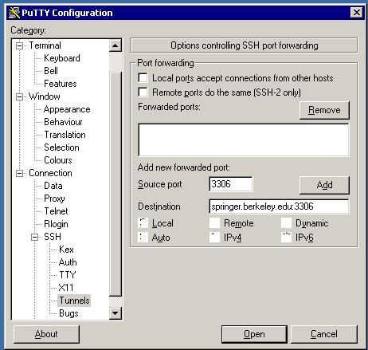

Setting up an SSH Tunnel to Access the MySQL server
In order to access the MySQL server from outside the SCF network under
Windows, you'll
need to set up an SSH tunnel using putty.
It's a very simple procedure which you
only need to set up once. (For Linux and Mac OSX, look at the last
paragraph to see how to set up an SSH tunnel.)
If you don't already have putty,
you can download it from http://www.chiark.greenend.org.uk/ sgtatham/putty/download.html. To set up a tunnel
using putty, first click the plus sign by the SSH menu choice in
the left pane of the main window, and then click on Tunnels. Fill in the
information as shown in this screenshot:

Once the information is in place, click the Add button to create the
tunnel. Make sure that the string "L3306" appears in the box which
describes the forwarded ports.
Now, click on the Session menu choice at the top of the left-hand pane, and
enter any valid SCF host in the Host Name window. Click on Open,
and log in with your SCF username and password. Note that you
you must be logged in for the tunnel to be activated, even if you won't be typing
any commands into the shell.
Once the tunnel is established, any MySQL client (like the graphical one you
can find at mysql.com
or R) will be able to connect to the standard MySQL
port on your computer, using the id and password from class, and the tunnel will
transfer the connection to the
SCF machine on which the database is running. If you need a hostname, use
"127.0.0.1".
If you're using Mac OSX or Linux on your own computer, you can set up an SSH tunnel to
the mysql server by typing the following command in a terminal window. (On a Mac, you
can find the terminal application in /Applications/Utilities/Terminal.app)
ssh -N -L 3306:springer.berkeley.edu:3306 s133xx@any-scf-host
where any-scf-host is the name of any scf host (except gandalf), and
s133xx is your SCF login id.
You'll be prompted for your password; once you enter it, you can put the ssh
command in the background by typing Control-z, and then bg.
On a Mac, you'll need to include host="127.0.0.1" in your call to
dbConnect when using an SSH tunnel to connect to the MySQL database.
File translated from
TEX
by
TTH,
version 3.67.
On 15 Mar 2011, 14:49.